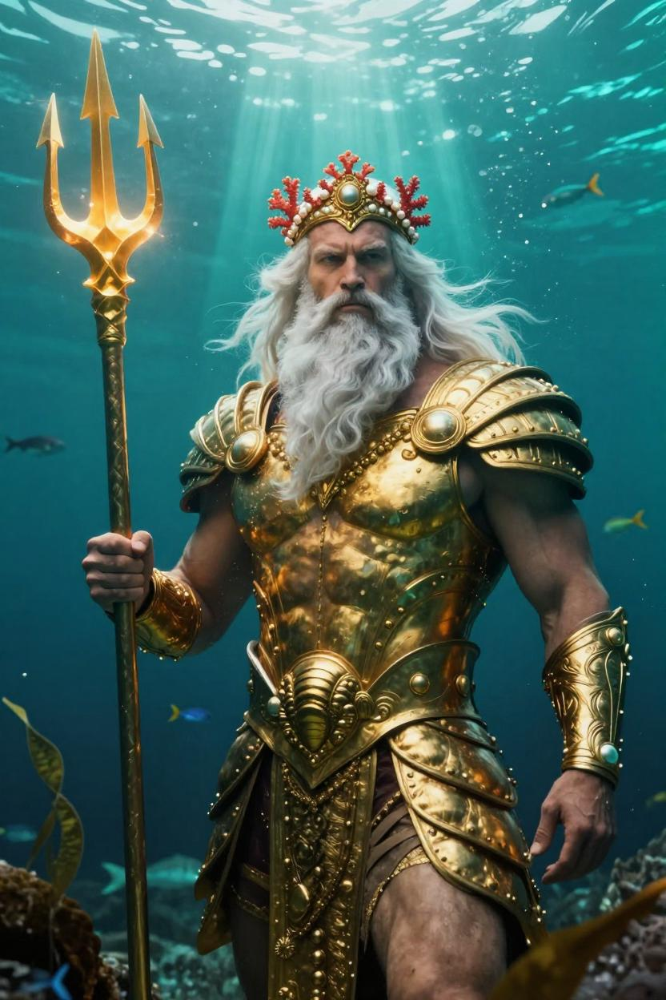

⚓ ☠ ⚓ ☠ ⚓
Tales from the Deep
Stereotypically speaking, an Atlantean is exactly what you see above: a bearded sea king draped in golden shell-armour, trident in hand, ruling over coral-choked ruins at the bottom of the ocean. Add salt spray, shipwrecks, compass roses and rope knots to taste — that's the nautical soul of this page.
Fair winds, and mind the undertow.